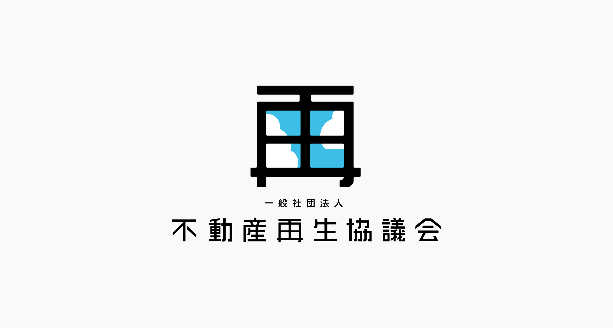

不動産再生協議会
2016
Logo Design
2016
Logo Design
理由を増幅する
住宅の再生事業のコンサルティングを請け負う一般社団法人不動産再生協議会のロゴデザインを担当。
この社団法人は集合住宅の建て替えや空き家となった古民家の再利用で起こる住民同士のトラブルを、法律や会計の知見で解決に導く活動をしています。その活動内容は明確で住民に届き、利用価値として理解できるものでしたが、他の法人と埋没してしまう懸念がありました。そこで単にトラブルを解決するのではなく、解決の先にある他にはない想いを提示することで住民とより深い関係性になると考えロゴデザインに落とし込みました。その想いの受け皿となるものは、活動を象徴し求心力が強い法人名にもある『再生』にフォーカスし、それを出発点としました。

ロゴ
老朽化がすすむ住宅を価値ある不動産にするためだけでなく、住民の何気無い暮らしや住まいから見える見慣れた風景に戻すという意味もこめて、日常を切り取る『窓』と『再』を組み合わせたロゴとしました。